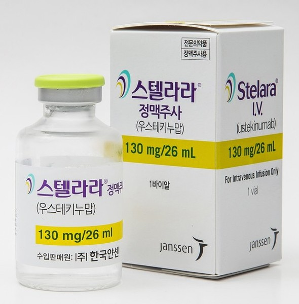
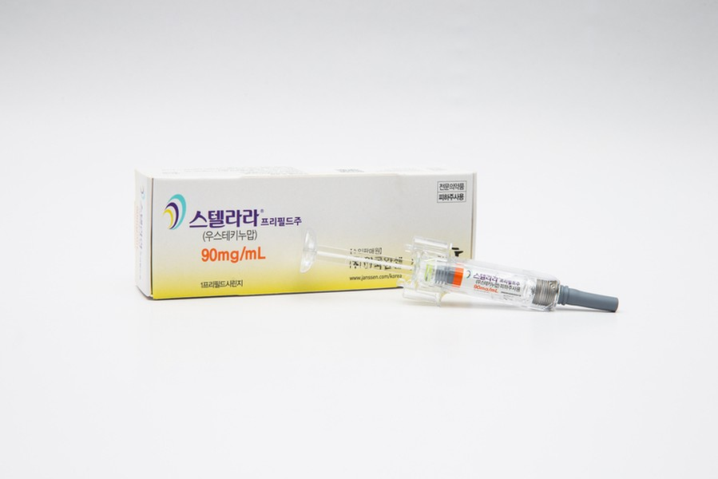

약물 소개
· DRUG OVERVIEW
스텔라라 Stelara
· ustekinumab
스텔라라
Stelara
ustekinumab
허가 적응증
정맥주사
성인 크론병 · 궤양성 대장염
프리필드시린지
위 2개 + 판상 건선 · 건선성 관절염
오늘은 염증성 장질환 중심
유도요법
정맥주사 바이알
130 mg / 26 mL · 희석 후 주입
유지요법
프리필드시린지
90 mg · 피하주사


실제 제품
정맥주사 바이알 130 mg/26 mL · 피하주사 프리필드시린지 90 mg